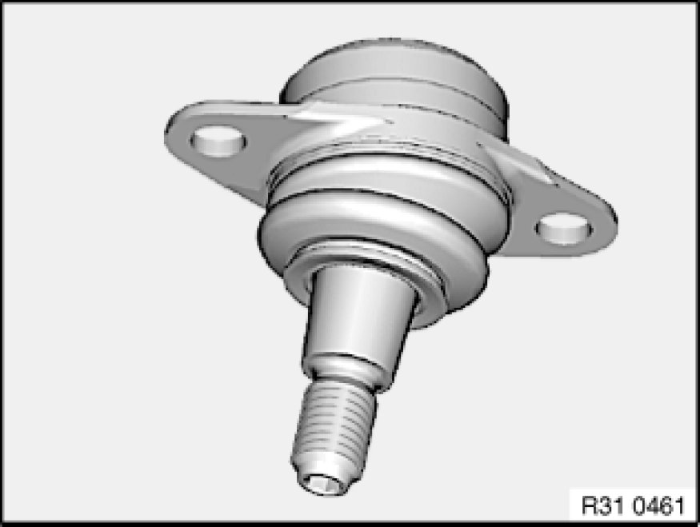
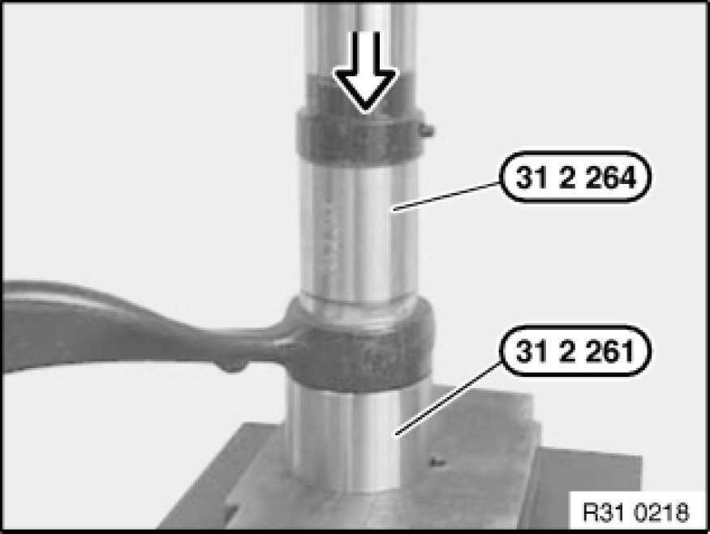
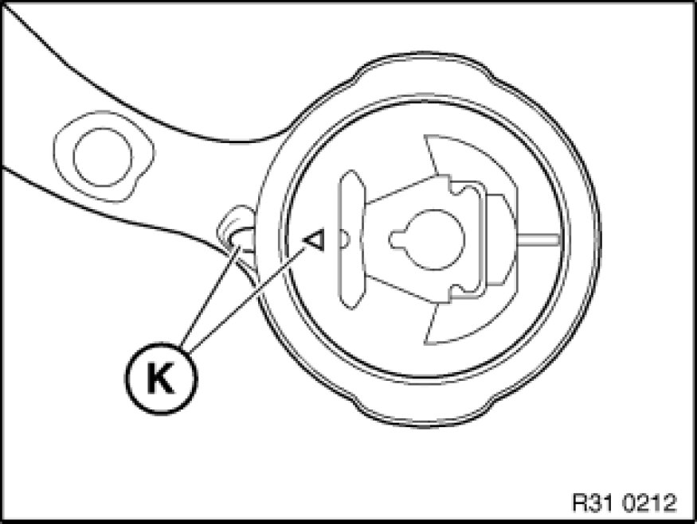
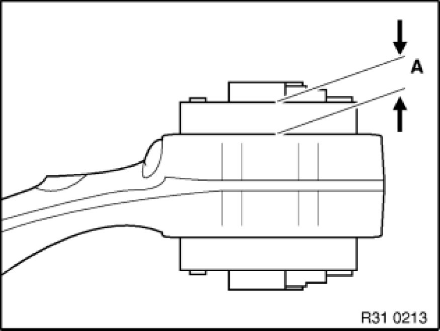

Replacing Rubber Mounts on Both Tension Struts
31 12 138 - Replacing rubber mounts on both tension struts

Special tools required:
- 31 2 261 31 2 260 Pressure Sleeve Tool
- 31 2 264 31 2 260 Pressure Sleeve Tool

Important!
The rubber mounts on both tension struts must be replaced! Note that the rubber mounts may only be changed once.

Carry out check:
There must always be a minimum amount of play in the guide joint.
1. Check guide joint play
Note: For this purpose, apply light pressure to the tension strut (in the area of the guide joint) in the horizontal and vertical directions.
- Play is OK: Check bolt connection (see Point 2)
- Play is not OK: Replace rubber mount and guide joint Removing and Installing/Replacing Guide Joint in Swivel Bearing
2. Check bolt connection (tension strut to guide joint) by tightening to 60% of tightening torque 31 12 20AZ Control Arms and Struts (Front) and listening for cracking sound
- Torque wrench cracking sound: Replace rubber mount
- Bolt connection turns: Replace tension strut and guide joint

Replacing rubber mount:
Remove both tension struts Removing and Installing/Replacing Left or Right Tension Strut.

Using a press and special tools 31 2 261 31 2 260 Pressure Sleeve Tool and 31 2 264 31 2 260 Pressure Sleeve Tool, press rubber mount out of tension strut.
Note:
Special tool 31 2 264 31 2 260 Pressure Sleeve Tool must be exactly flush with rubber mount bushing.

Installation Note:
Keep rubber mount and bushing in tension strut clean and free from grease.
Align rubber mounts to each other using markings (K) and press in. The deviation must not exceed ± 3°.

Installation Note:
Protrusion (A) = 12.5 ± 0.7 mm